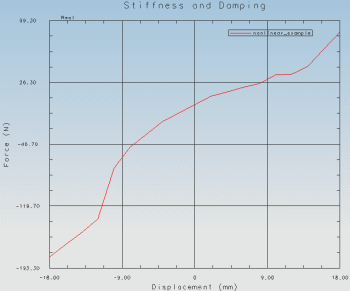

您可以在弹簧、阻尼器以及衬套中构建非线性刚度与阻尼。
要定义刚度与/或阻尼，使用刚度与阻尼表格函数，它将生成样条曲线。
软件将对函数进行插值，以确定任意位移或速度处的力或扭矩都位于您提供的表的范围内。
|

|
非线性刚度通过力与位移的函数来表示(对于平移对象)，或者扭矩与角度的函数(对于旋转对象)。
非线性阻尼力与速度的函数来表示(对于平移对象)，或者扭矩与角速度的函数(对于旋转对象)。
样条曲线在所有点上的斜率都必须是正值。
负的位移值表示压缩。
定义运动对象时，选择样条作为刚度系数类型，这将会打开 XY 函数编辑器，在该编辑器中您可以创建刚度与阻尼表格函数，横坐标数据类型可以是位移、速度、角速度或者角位移，纵坐标数据类型可以是力或扭矩。
然后您输入表格值来定义力或扭矩的范围。